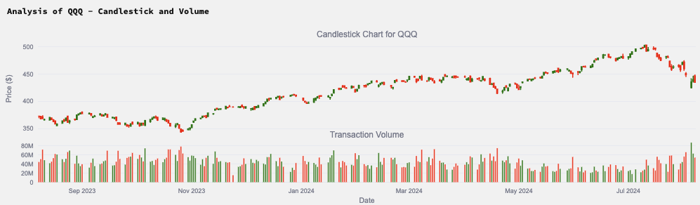
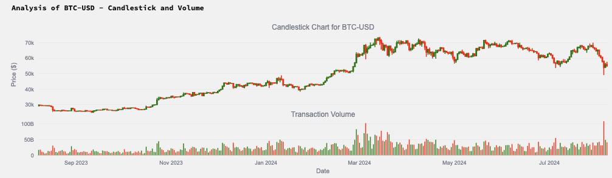
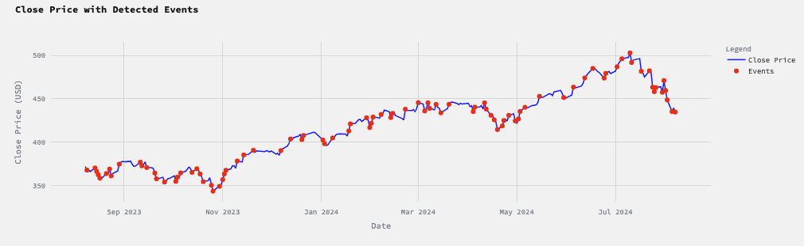
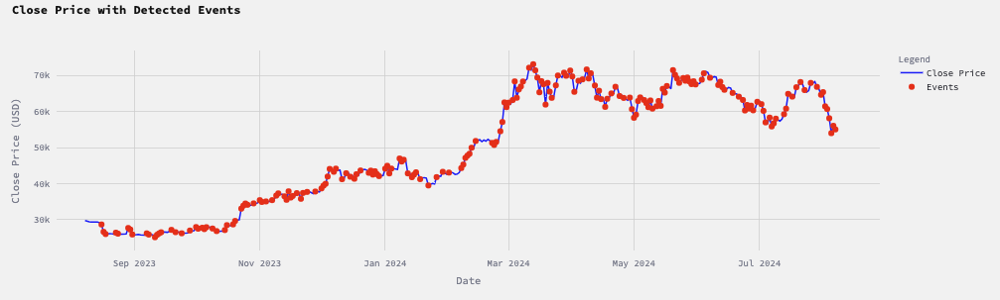
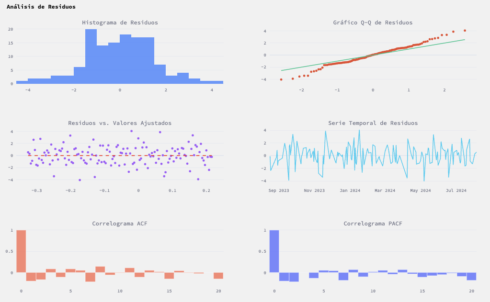
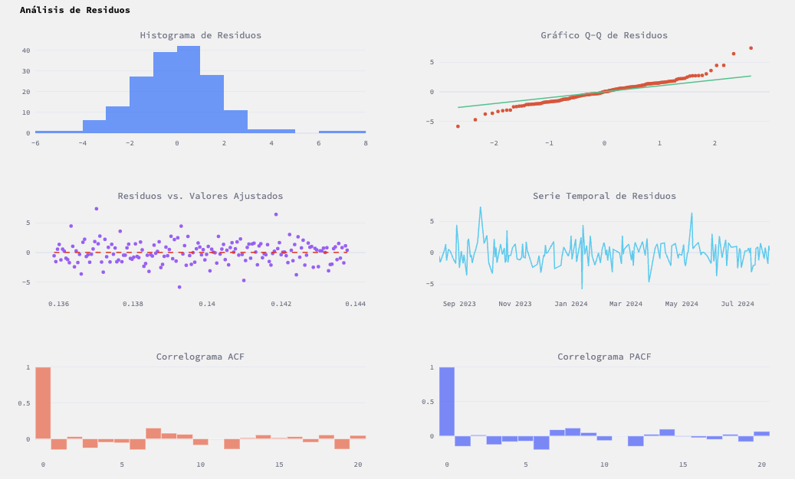
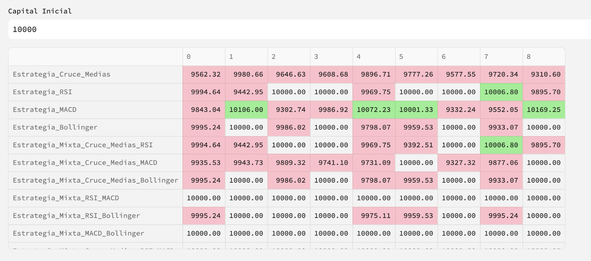
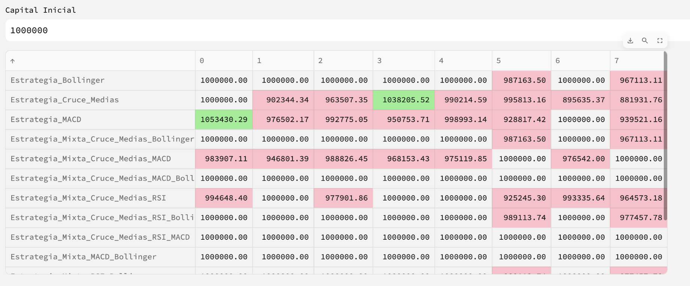

Simulación de Procesos de Hawkes en Finanzas
Introducción
Los mercados financieros son sistemas complejos donde los eventos suelen ocurrir en patrones que pueden parecer aleatorios, pero a menudo muestran características de agrupamiento y dependencia temporal. Estos patrones, conocidos como clustering, pueden observarse en diversas áreas como la volatilidad de los precios y la frecuencia de las transacciones. Modelar estos fenómenos es crucial para comprender mejor el comportamiento del mercado y desarrollar estrategias comerciales efectivas.
Un proceso puntual es un tipo de proceso estocástico utilizado para modelar la ocurrencia de eventos en el tiempo o en el espacio. Entre estos, el proceso de Hawkes, introducido por Hawkes en 1971, se destaca por su capacidad para capturar el efecto de excitación propio de los eventos, donde la ocurrencia de un evento incrementa temporalmente la probabilidad de ocurrencia de futuros eventos.
El proceso de Hawkes se ha convertido en una herramienta popular en el análisis de datos financieros debido a su habilidad para modelar la dependencia temporal y el agrupamiento de eventos. Este proceso es particularmente útil en el contexto de transacciones de alta frecuencia, donde los eventos como las compras y ventas de activos financieros ocurren en rápida sucesión y muestran patrones de auto-excitación.
En este proyecto, nuestro objetivo es simular y analizar el comportamiento de los procesos de Hawkes aplicados a diferentes mercados financieros. Utilizaremos datos de alta frecuencia de mercados como el de los indicadores QQQ y el BTC-USD para ilustrar cómo los procesos de Hawkes pueden modelar el clustering de transacciones. Exploraremos tanto modelos univariantes para capturar los efectos de auto-excitación.


Revisión de la Literatura
Teoría de Procesos Puntuales
Los procesos puntuales son herramientas matemáticas que se utilizan para modelar la ocurrencia de eventos en el tiempo o en el espacio. Un proceso puntual puede describirse como una colección de tiempos de llegada que representan la ocurrencia de eventos. La teoría de procesos puntuales es amplia y ha sido aplicada en diversas áreas, incluyendo la física, biología, y, por supuesto, las finanzas. Algunos textos fundamentales en este campo incluyen el trabajo de Cox e Isham (1980) y el libro de Snyder y Miller (2012), que proporcionan una base sólida para la comprensión de estos procesos.
Proceso de Hawkes
El proceso de Hawkes, introducido por Hawkes en 1971, es un tipo de proceso puntual que permite modelar la auto-excitación y el clustering de eventos. En un proceso de Hawkes, la ocurrencia de un evento aumenta temporalmente la tasa de ocurrencia de futuros eventos. Esto es particularmente útil para modelar fenómenos donde los eventos tienden a agruparse en el tiempo, como es el caso en los mercados financieros.
Hawkes y Oakes (1974) demostraron que todos los procesos de auto-excitación estacionarios con intensidad finita pueden ser representados como procesos de Poisson de clustering. La estimación de parámetros en procesos de Hawkes ha sido desarrollada por varios autores, incluyendo a Ozaki (1979) y Ogata (1981), quienes propusieron métodos de estimación de máxima verosimilitud y simulación. Más recientemente, Bacry et al. (2015) proporcionaron una revisión exhaustiva de las aplicaciones del proceso de Hawkes en finanzas, mostrando cómo estos modelos pueden capturar la dinámica compleja de los mercados financieros.


Aplicaciones en Finanzas
La aplicación de procesos de Hawkes en finanzas ha ganado popularidad debido a su capacidad para modelar la dependencia temporal y el clustering de eventos como transacciones y cambios de precios. Bauwens y Hautsch (2009) exploraron el uso de procesos puntuales en el comercio de alta frecuencia, mientras que Heusser (2013) aplicó el proceso de Hawkes al mercado de Bitcoin. Hewlett (2006) y Embrechts et al. (2011) demostraron cómo los procesos de Hawkes pueden ser utilizados para modelar la llegada de órdenes de compra y venta en mercados de divisas y acciones.
En el contexto de mercados de alta frecuencia, los procesos de Hawkes se utilizan para modelar la llegada de órdenes de compra y venta, permitiendo capturar tanto los efectos de auto-excitación (cuando una orden provoca más órdenes del mismo tipo) como los efectos de excitación cruzada (cuando una orden de compra, por ejemplo, provoca órdenes de venta). Lorenzen (2012) y Crowley (2013) proporcionaron aplicaciones detalladas de estos modelos en datos de alta frecuencia, mostrando su capacidad para capturar patrones de agrupamiento y dependencia temporal.
En resumen, la literatura existente demuestra que los procesos de Hawkes son herramientas efectivas para modelar y analizar la dinámica de los mercados financieros. Su capacidad para capturar el clustering y la auto-excitación de eventos los hace particularmente adecuados para el análisis de transacciones de alta frecuencia y otros fenómenos financieros.
Marco Teórico
Proceso de Hawkes con Kernel Exponencial
Un proceso de Hawkes es un proceso puntual que se caracteriza por su capacidad de modelar la autointensidad, es decir, eventos pasados influyen en la probabilidad de ocurrencia de eventos futuros. Es ampliamente utilizado en la modelización de eventos financieros y otros procesos estocásticos donde la ocurrencia de eventos puede desencadenar una mayor frecuencia de eventos futuros.
Para un proceso de Hawkes, la intensidad condicional \(\lambda(t)\) en el tiempo \(t\) está dada por:
\[ \lambda(t) = \mu + \sum_{t_i < t} \phi(t - t_i) \]
donde:
- \(\mu\) es la tasa base o tasa de fondo, que representa la intensidad de ocurrencia de eventos en ausencia de eventos anteriores.
- \(\phi(t - t_i)\) es el kernel, que describe cómo los eventos pasados \(t_i\) afectan la intensidad actual \(\lambda(t)\).
En el caso de un kernel exponencial, \(\phi(t)\) toma la forma:
\[ \phi(t) = \alpha e^{-\beta t} \]
donde:
- \(\alpha\) es un parámetro de escala que determina la magnitud del impacto de un evento.
- \(\beta\) es un parámetro de decaimiento que determina la rapidez con la que el impacto de un evento decrece con el tiempo.
Sustituyendo el kernel exponencial en la fórmula general de la intensidad condicional, tenemos:
\[ \lambda(t) = \mu + \sum_{t_i < t} \alpha e^{-\beta (t - t_i)} \]
Este modelo captura la dependencia temporal de eventos, permitiendo que eventos recientes tengan un mayor impacto en la intensidad actual que eventos más antiguos.
Propiedades del Proceso de Hawkes
Algunas propiedades clave del proceso de Hawkes con kernel exponencial incluyen:
- Autocorrelación Positiva: Los eventos tienden a ocurrir en rachas debido a la retroalimentación positiva del kernel.
- Clustering: La estructura de autointensidad permite la formación de clusters de eventos.
- Estacionaridad: Bajo ciertas condiciones en los parámetros \(\mu\), \(\alpha\) y \(\beta\), el proceso puede ser estacionario.
El proceso de Hawkes es una herramienta poderosa para modelar secuencias de eventos en diversas aplicaciones, especialmente en finanzas, donde puede capturar la dinámica compleja de la ocurrencia de eventos.
Valores de los Parámetros en un Proceso de Hawkes con Kernel Exponencial
En un proceso de Hawkes con kernel exponencial, los parámetros \(\mu\), \(\alpha\) y \(\beta\) son tomados como constantes para simplificar el modelo y facilitar su análisis. Estos parámetros tienen roles específicos y deben cumplir ciertas características para que el modelo sea válido y útil en la práctica.
Parámetro \(\mu\)
El parámetro \(\mu\) es la tasa base o tasa de fondo, que representa la intensidad de ocurrencia de eventos en ausencia de eventos anteriores. Este valor debe ser no negativo:
\[ \mu \geq 0 \]
Parámetro \(\alpha\)
El parámetro \(\alpha\) es un parámetro de escala que determina la magnitud del impacto de un evento sobre la intensidad del proceso. Este valor también debe ser no negativo:
\[ \alpha \geq 0 \]
Parámetro \(\beta\)
El parámetro \(\beta\) es un parámetro de decaimiento que determina la rapidez con la que el impacto de un evento decrece con el tiempo. Este valor debe ser positivo para asegurar que el impacto de eventos pasados disminuya con el tiempo:
\[ \beta > 0 \]
Condiciones de Estabilidad
Para que el proceso de Hawkes sea estacionario y no explote, es necesario que el efecto acumulativo de los eventos no sea demasiado grande. Esto se traduce en la siguiente condición de estabilidad:
\[ \alpha < \beta \]
Esta condición asegura que la retroalimentación positiva del proceso no cause una explosión de eventos en el tiempo.
Interpretación de los Parámetros
- \(\mu\): Una tasa base alta \(\mu\) implica que los eventos ocurren con frecuencia incluso sin la influencia de eventos pasados. Un valor bajo de \(\mu\) sugiere que los eventos son raros en ausencia de autointensidad.
- \(\alpha\): Un valor alto de \(\alpha\) indica que un evento pasado tiene un gran impacto en la probabilidad de futuros eventos. Un valor bajo de \(\alpha\) sugiere que los eventos pasados tienen un efecto menor.
- \(\beta\): Un valor alto de \(\beta\) significa que el impacto de los eventos pasados decae rápidamente, mientras que un valor bajo de \(\beta\) implica que el impacto de los eventos persiste durante más tiempo.
Ejemplo de Parámetros
Supongamos que se eligen los siguientes valores de parámetros para un proceso de Hawkes:
- \(\mu = 0.5\): La tasa base es moderada, lo que implica una ocurrencia regular de eventos en ausencia de influencia de eventos pasados.
- \(\alpha = 0.8\): Un evento pasado incrementa significativamente la probabilidad de futuros eventos.
- \(\beta = 1.2\): El impacto de un evento pasado decrece moderadamente rápido.
Estos valores cumplen la condición de estabilidad (\(\alpha < \beta\)) y permiten modelar un proceso donde los eventos tienen una influencia notable pero decreciente con el tiempo.
Análisis de Residuos en Procesos de Hawkes: Normalidad, Heterocedasticidad, Autocorrelación y Estacionariedad
El análisis de residuos es fundamental en la validación de modelos estadísticos y econométricos, incluidos los procesos de Hawkes. Los residuos representan las discrepancias entre los eventos observados y los predichos por el modelo. Evaluar sus propiedades permite verificar la adecuación del modelo y la validez de las inferencias realizadas. A continuación, se describen los aspectos clave que deben analizarse: normalidad, heterocedasticidad, autocorrelación y estacionariedad, con un enfoque particular en procesos de Hawkes.
Normalidad
Importancia
En muchos modelos estadísticos, se supone que los residuos son normalmente distribuidos. Sin embargo, en el contexto de los procesos de Hawkes, la normalidad de los residuos no siempre es una suposición crítica, dado que estos modelos se centran en la ocurrencia y la intensidad de eventos. Aun así, la normalidad puede facilitar el uso de ciertas técnicas estadísticas y la interpretación de resultados.
Evaluación
- Histogramas y Q-Q plots: Visualización de los residuos para verificar la forma de la distribución.
- Pruebas estadísticas: Pruebas como Shapiro-Wilk o Kolmogorov-Smirnov para evaluar la normalidad de los residuos.
Heterocedasticidad
Importancia
La heterocedasticidad en los residuos de un proceso de Hawkes indica que la variabilidad de los eventos no es constante. Esto puede afectar la precisión de las estimaciones de los parámetros y la validez de las inferencias. En procesos de Hawkes, la heterocedasticidad puede reflejar la naturaleza dinámica y dependiente del tiempo de la intensidad de los eventos.
Evaluación
- Gráficos de dispersión: Residuales versus valores predichos para observar patrones en la variabilidad.
- Pruebas estadísticas: Pruebas como Breusch-Pagan y White para detectar heterocedasticidad.
Autocorrelación
Importancia
La autocorrelación de los residuos es un aspecto crítico en los procesos de Hawkes, ya que estos modelos se basan en la idea de que los eventos pasados influyen en la ocurrencia de eventos futuros. La presencia de autocorrelación en los residuos puede indicar que el modelo no ha capturado completamente la estructura de dependencia temporal de los eventos.
Evaluación
- Gráficos de autocorrelación: ACF (Autocorrelation Function) y PACF (Partial Autocorrelation Function) para visualizar la autocorrelación de los residuos.
- Pruebas estadísticas: Pruebas como Durbin-Watson y Breusch-Godfrey para detectar autocorrelación.
Estacionariedad
Importancia
La estacionariedad implica que las propiedades estadísticas de la serie temporal (media, varianza, autocorrelación) son constantes a lo largo del tiempo. Para los procesos de Hawkes, la estacionariedad es esencial para asegurar que las predicciones sean fiables y que el modelo no exhiba un comportamiento explosivo.
Evaluación
- Gráficos de series temporales: Observación de tendencias y estacionalidad en los residuos.
- Pruebas estadísticas: Pruebas como Dickey-Fuller aumentada (ADF) y KPSS para evaluar la estacionariedad.
Analizar los residuos en términos de normalidad, heterocedasticidad, autocorrelación y estacionariedad es crucial para validar la adecuación de un modelo de proceso de Hawkes. Este análisis asegura que las suposiciones del modelo se cumplen y que las inferencias realizadas son válidas y fiables. Detectar y corregir problemas en estas áreas puede mejorar significativamente la precisión y la interpretabilidad del modelo, permitiendo una mejor comprensión y predicción de los eventos en estudio.
A continuación presentamos los gráficos y resultados de los tests realizados:
Resultados del Análisis de Residuos QQQ

Resultados del Análisis de Residuos
Normalidad
- Prueba de Shapiro-Wilk:
- Estadístico = 0.9903
- p-valor = 0.4680
Interpretación: Los residuos siguen una distribución normal (p-valor > 0.05).
Significado e Influencia: La normalidad de los residuos sugiere que las suposiciones del modelo sobre la distribución de los errores son razonables. Aunque la normalidad no es una suposición estricta en los procesos de Hawkes, un resultado positivo en esta prueba facilita el uso de ciertos métodos estadísticos y la interpretación de los intervalos de confianza y las pruebas de hipótesis.
Heterocedasticidad
- Prueba de Breusch-Pagan:
- Estadístico = 0.2882
- p-valor = 0.5913
Interpretación: No hay evidencia de heterocedasticidad (p-valor > 0.05).
Significado e Influencia: La ausencia de heterocedasticidad implica que la variabilidad de los residuos es constante. Esto es deseable porque asegura que las estimaciones de los parámetros del modelo sean eficientes y que los intervalos de confianza sean fiables. En los procesos de Hawkes, esto significa que la intensidad de los eventos es modelada de manera consistente a lo largo del tiempo.
Autocorrelación
- Prueba de Breusch-Godfrey:
- Estadístico = 14.1391
- p-valor = 0.0147
Interpretación: Hay evidencia de autocorrelación (p-valor <= 0.05).
Significado e Influencia: La presencia de autocorrelación en los residuos indica que hay una dependencia temporal que no ha sido capturada completamente por el modelo de Hawkes. Esto puede sugerir que el modelo necesita ajustes adicionales, como la inclusión de términos de memoria más larga o la consideración de un kernel más complejo para mejorar la captura de la dinámica temporal de los eventos.
Estacionariedad
- Prueba de Dickey-Fuller (ADF):
- Estadístico = -11.0577
- p-valor = 0.0000
Interpretación: Los residuos son estacionarios (p-valor <= 0.05).
Significado e Influencia: La estacionariedad de los residuos es crucial para asegurar que las propiedades estadísticas del modelo sean constantes a lo largo del tiempo. En el contexto de los procesos de Hawkes, la estacionariedad sugiere que la estructura temporal de los eventos es estable, lo que es fundamental para realizar predicciones fiables y para la validez de las inferencias estadísticas.
Observaciones respecto al análisis
El análisis de residuos proporciona información valiosa sobre la adecuación del modelo de Hawkes. Los resultados indican que:
- Los residuos siguen una distribución normal, lo que es positivo para la aplicación de métodos estadísticos.
- No hay heterocedasticidad, lo que asegura que las estimaciones sean eficientes.
- Existe autocorrelación, lo que sugiere que el modelo puede necesitar ajustes adicionales para capturar completamente la dependencia temporal.
- Los residuos son estacionarios, lo que es fundamental para la estabilidad del modelo.
Estos resultados influyen directamente en la interpretación y la validación del modelo de Hawkes, proporcionando una guía sobre posibles mejoras y confirmando la adecuación de las suposiciones básicas del modelo.
Resultados del Análisis de Residuos BTC-USD

Normalidad
- Prueba de Shapiro-Wilk:
- Estadístico = 0.9728
- p-valor = 0.0017
Interpretación: Los residuos no siguen una distribución normal (p-valor <= 0.05).
Significado e Influencia: La no normalidad de los residuos sugiere que las suposiciones del modelo sobre la distribución de los errores pueden no ser válidas. En el contexto de los procesos de Hawkes, esto puede no ser un problema crítico, ya que la normalidad no es una suposición esencial. Sin embargo, la no normalidad podría afectar la precisión de ciertas inferencias estadísticas y la aplicabilidad de algunos métodos de análisis.
Heterocedasticidad
- Prueba de Breusch-Pagan:
- Estadístico = 0.8022
- p-valor = 0.3704
Interpretación: No hay evidencia de heterocedasticidad (p-valor > 0.05).
Significado e Influencia: La ausencia de heterocedasticidad implica que la variabilidad de los residuos es constante. Esto es deseable porque asegura que las estimaciones de los parámetros del modelo sean eficientes y que los intervalos de confianza sean fiables. En los procesos de Hawkes, esto significa que la intensidad de los eventos es modelada de manera consistente a lo largo del tiempo.
Autocorrelación
- Prueba de Breusch-Godfrey:
- Estadístico = 8.7743
- p-valor = 0.1184
Interpretación: No hay evidencia de autocorrelación (p-valor > 0.05).
Significado e Influencia: La ausencia de autocorrelación en los residuos indica que el modelo ha capturado adecuadamente la estructura de dependencia temporal de los eventos. Esto sugiere que el modelo de Hawkes está bien especificado y que las estimaciones de los parámetros no están sesgadas debido a la autocorrelación no modelada.
Estacionariedad
- Prueba de Dickey-Fuller (ADF):
- Estadístico = -7.6037
- p-valor = 0.0000
Interpretación: Los residuos son estacionarios (p-valor <= 0.05).
Significado e Influencia: La estacionariedad de los residuos es crucial para asegurar que las propiedades estadísticas del modelo sean constantes a lo largo del tiempo. En el contexto de los procesos de Hawkes, la estacionariedad sugiere que la estructura temporal de los eventos es estable, lo que es fundamental para realizar predicciones fiables y para la validez de las inferencias estadísticas.
Observaciones respecto al análisis
El análisis de residuos proporciona información valiosa sobre la adecuación del modelo de Hawkes. Los resultados indican que:
- Los residuos no siguen una distribución normal, lo que puede afectar algunas inferencias estadísticas, aunque no es crítico para el modelo de Hawkes.
- No hay heterocedasticidad, lo que asegura que las estimaciones sean eficientes.
- No hay autocorrelación, lo que sugiere que el modelo ha capturado adecuadamente la dependencia temporal de los eventos.
- Los residuos son estacionarios, lo que es fundamental para la estabilidad del modelo.
Estos resultados influyen directamente en la interpretación y la validación del modelo de Hawkes, proporcionando una guía sobre posibles ajustes y confirmando la adecuación de las suposiciones básicas del modelo.
Comparación entre Simulación y Datos Reales
Para validar la efectividad del modelo de Hawkes y su capacidad para predecir eventos futuros, es esencial comparar los resultados de la simulación del modelo con los datos reales. Esta comparación ayuda a evaluar la precisión del modelo y a identificar posibles áreas de mejora.
Procedimiento de Simulación
La simulación de un proceso de Hawkes implica generar una serie de eventos basada en los parámetros estimados (\(\mu\), \(\alpha\) y \(\beta\)). Los pasos generales para realizar la simulación son:
- Inicialización: Comenzar con una intensidad inicial \(\lambda(0) = \mu\).
- Generación de Eventos: Utilizar los parámetros del modelo para generar tiempos de eventos sucesivos.
- Actualización de la Intensidad: Actualizar la intensidad \(\lambda(t)\) después de cada evento utilizando el kernel exponencial.
Comparación con Datos Reales
Para comparar la simulación con los datos reales, se pueden seguir estos pasos:
- Simulación de Eventos: Generar una serie de eventos utilizando los parámetros estimados del modelo de Hawkes.
- Gráfica de Eventos: Comparar visualmente la serie temporal de eventos simulados con la serie de eventos observados.
Predicciones Basadas en Eventos
El modelo de Hawkes también permite realizar predicciones basadas en la ocurrencia de eventos pasados. Esto se puede lograr mediante los siguientes pasos:
- Calculo de la Intensidad Condicional: Utilizar los eventos observados hasta un tiempo \(t\) para calcular la intensidad condicional \(\lambda(t)\).
- Predicción de Eventos Futuros: Utilizar la intensidad condicional \(\lambda(t)\) para predecir la probabilidad de ocurrencia de eventos futuros.
- Evaluación de Predicciones: Comparar las predicciones del modelo con los eventos futuros observados para evaluar la precisión predictiva del modelo.
Estrategias de Compra y Venta
A continuación se describen diversas estrategias de compra y venta basadas en indicadores técnicos. Estas estrategias pueden ser utilizadas para tomar decisiones informadas en el mercado financiero.
Estrategia de Cruce de Medias
Descripción: Compra cuando la media móvil simple (SMA) de 14 periodos cruza por encima de la media móvil exponencial (EMA) de 14 periodos. Venta cuando la SMA cruza por debajo de la EMA.
Compra: SMA(14) cruza por encima de EMA(14)
Venta: SMA(14) cruza por debajo de EMA(14)
Estrategia RSI
Descripción: Compra cuando el Índice de Fuerza Relativa (RSI) de 14 periodos está por debajo de 30 (sobrevendido). Venta cuando el RSI está por encima de 70 (sobrecomprado).
Compra: RSI(14) < 30
Venta: RSI(14) > 70
Estrategia MACD
Descripción: Compra cuando la línea MACD cruza por encima de la línea de señal. Venta cuando la línea MACD cruza por debajo de la línea de señal.
Compra: Línea MACD cruza por encima de la línea de señal
Venta: Línea MACD cruza por debajo de la línea de señal
Estrategia de Bandas de Bollinger
Descripción: Compra cuando el precio de cierre cruza por debajo de la banda inferior de Bollinger. Venta cuando el precio de cierre cruza por encima de la banda superior de Bollinger.
Compra: Precio de cierre cruza por debajo de la banda inferior de Bollinger
Venta: Precio de cierre cruza por encima de la banda superior de Bollinger
Estrategias Mixtas
Estrategia Mixta Cruce de Medias y RSI
Descripción: Compra cuando la SMA de 14 periodos cruza por encima de la EMA de 14 periodos y el RSI de 14 periodos está por debajo de 30. Venta cuando la SMA cruza por debajo de la EMA y el RSI está por encima de 70.
Compra: SMA(14) cruza por encima de EMA(14) y RSI(14) < 30
Venta: SMA(14) cruza por debajo de EMA(14) y RSI(14) > 70
Estrategia Mixta Cruce de Medias y MACD
Descripción: Compra cuando la SMA de 14 periodos cruza por encima de la EMA de 14 periodos y la línea MACD cruza por encima de la línea de señal. Venta cuando la SMA cruza por debajo de la EMA y la línea MACD cruza por debajo de la línea de señal.
Compra: SMA(14) cruza por encima de EMA(14) y línea MACD cruza por encima de la línea de señal
Venta: SMA(14) cruza por debajo de EMA(14) y línea MACD cruza por debajo de la línea de señal
Estrategia Mixta Cruce de Medias y Bandas de Bollinger
Descripción: Compra cuando la SMA de 14 periodos cruza por encima de la EMA de 14 periodos y el precio de cierre cruza por debajo de la banda inferior de Bollinger. Venta cuando la SMA cruza por debajo de la EMA y el precio de cierre cruza por encima de la banda superior de Bollinger.
Compra: SMA(14) cruza por encima de EMA(14) y precio de cierre cruza por debajo de la banda inferior de Bollinger
Venta: SMA(14) cruza por debajo de EMA(14) y precio de cierre cruza por encima de la banda superior de Bollinger
Estrategia Mixta RSI y MACD
Descripción: Compra cuando el RSI de 14 periodos está por debajo de 30 y la línea MACD cruza por encima de la línea de señal. Venta cuando el RSI está por encima de 70 y la línea MACD cruza por debajo de la línea de señal.
Compra: RSI(14) < 30 y línea MACD cruza por encima de la línea de señal
Venta: RSI(14) > 70 y línea MACD cruza por debajo de la línea de señal
Estrategia Mixta RSI y Bandas de Bollinger
Descripción: Compra cuando el RSI de 14 periodos está por debajo de 30 y el precio de cierre cruza por debajo de la banda inferior de Bollinger. Venta cuando el RSI está por encima de 70 y el precio de cierre cruza por encima de la banda superior de Bollinger.
Compra: RSI(14) < 30 y precio de cierre cruza por debajo de la banda inferior de Bollinger
Venta: RSI(14) > 70 y precio de cierre cruza por encima de la banda superior de Bollinger
Estrategia Mixta MACD y Bandas de Bollinger
Descripción: Compra cuando la línea MACD cruza por encima de la línea de señal y el precio de cierre cruza por debajo de la banda inferior de Bollinger. Venta cuando la línea MACD cruza por debajo de la línea de señal y el precio de cierre cruza por encima de la banda superior de Bollinger.
Compra: Línea MACD cruza por encima de la línea de señal y precio de cierre cruza por debajo de la banda inferior de Bollinger
Venta: Línea MACD cruza por debajo de la línea de señal y precio de cierre cruza por encima de la banda superior de Bollinger
Estrategia Mixta Cruce de Medias, RSI y MACD
Descripción: Compra cuando la SMA de 14 periodos cruza por encima de la EMA de 14 periodos, el RSI de 14 periodos está por debajo de 30 y la línea MACD cruza por encima de la línea de señal. Venta cuando la SMA cruza por debajo de la EMA, el RSI está por encima de 70 y la línea MACD cruza por debajo de la línea de señal.
Compra: SMA(14) cruza por encima de EMA(14), RSI(14) < 30 y línea MACD cruza por encima de la línea de señal
Venta: SMA(14) cruza por debajo de EMA(14), RSI(14) > 70 y línea MACD cruza por debajo de la línea de señal
Estrategia Mixta Cruce de Medias, RSI y Bandas de Bollinger
Descripción: Compra cuando la SMA de 14 periodos cruza por encima de la EMA de 14 periodos, el RSI de 14 periodos está por debajo de 30 y el precio de cierre cruza por debajo de la banda inferior de Bollinger. Venta cuando la SMA cruza por debajo de la EMA, el RSI está por encima de 70 y el precio de cierre cruza por encima de la banda superior de Bollinger.
Compra: SMA(14) cruza por encima de EMA(14), RSI(14) < 30 y precio de cierre cruza por debajo de la banda inferior de Bollinger
Venta: SMA(14) cruza por debajo de EMA(14), RSI(14) > 70 y precio de cierre cruza por encima de la banda superior de Bollinger
Estrategia Mixta Cruce de Medias, MACD y Bandas de Bollinger
Descripción: Compra cuando la SMA de 14 periodos cruza por encima de la EMA de 14 periodos, la línea MACD cruza por encima de la línea de señal y el precio de cierre cruza por debajo de la banda inferior de Bollinger. Venta cuando la SMA cruza por debajo de la EMA, la línea MACD cruza por debajo de la línea de señal y el precio de cierre cruza por encima de la banda superior de Bollinger.
Compra: SMA(14) cruza por encima de EMA(14), línea MACD cruza por encima de la línea de señal y precio de cierre cruza por debajo de la banda inferior de Bollinger
Venta: SMA(14) cruza por debajo de EMA(14), línea MACD cruza por debajo de la línea de señal y precio de cierre cruza por encima de la banda superior de Bollinger
Estrategia Mixta RSI, MACD y Bandas de Bollinger
Descripción: Compra cuando el RSI de 14 periodos está por debajo de 30, la línea MACD cruza por encima de la línea de señal y el precio de cierre cruza por debajo de la banda inferior de Bollinger. Venta cuando el RSI está por encima de 70, la línea MACD cruza por debajo de la línea de señal y el precio de cierre cruza por encima de la banda superior de Bollinger.
Compra: RSI(14) < 30, línea MACD cruza por encima de la línea de señal y precio de cierre cruza por debajo de la banda inferior de Bollinger
Venta: RSI(14) > 70, línea MACD cruza por debajo de la línea de señal y precio de cierre cruza por encima de la banda superior de Bollinger
QQQ

BTC-USD

Conclusión sobre el Proceso de Hawkes
El proceso de Hawkes es una herramienta poderosa y versátil para modelar la ocurrencia de eventos que exhiben dependencia temporal. Su capacidad para capturar la autointensidad, donde los eventos pasados incrementan la probabilidad de futuros eventos, lo hace especialmente útil en diversas aplicaciones, desde la modelización de actividades en mercados financieros hasta la previsión de terremotos y otras secuencias de eventos en ciencias sociales y naturales.
Futuras Mejoras y Ajustes
A pesar de su utilidad, el proceso de Hawkes puede requerir ajustes adicionales para capturar completamente la complejidad de ciertos conjuntos de datos. La inclusión de términos de memoria más larga o la utilización de kernels más complejos podrían mejorar aún más la precisión del modelo.
En conclusión, el proceso de Hawkes es una herramienta esencial para el análisis de secuencias de eventos dependientes en el tiempo. Su flexibilidad y capacidad para incorporar la dependencia temporal lo hacen invaluable en múltiples disciplinas, proporcionando insights profundos y predicciones precisas sobre la ocurrencia de eventos futuros.